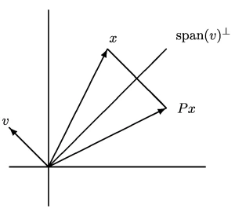

(m, n) = size(A) = (6, 4)Lecture 8: QR factorizations
Jamie Haddock
Difference of orthogonal vectors
Exercise: Difference of orthogonal vectors
Suppose that \(\mathbf{q}_1\) and \(\mathbf{q}_2\) are orthogonal vectors. Prove then that \[\|\mathbf{q}_1 - \mathbf{q}_2\|^2 = \|\mathbf{q}_1\|^2 + \|\mathbf{q}_2\|^2.\]
Answer:
We can expand the norm using the inner product as \[\|\mathbf{q}_1 - \mathbf{q}_2\|^2 = (\mathbf{q}_1 - \mathbf{q}_2)^\top (\mathbf{q}_1 - \mathbf{q}_2) = \mathbf{q}_1^\top \mathbf{q}_1 - 2 \mathbf{q}_1^\top \mathbf{q}_2 + \mathbf{q}_2^\top \mathbf{q}_2 = \|\mathbf{q}_1\|^2 + \|\mathbf{q}_2\|^2.\]There is no possibility of subtractive cancellation here.
Fact:
Addition and subtraction of vectors are guaranteed to be well-conditioned when the vectors are orthogonal.
ONC matrices
Definition: ONC matrix
An ONC matrix is one whose columns are an orthonormal set of vectors.
The following result follows from identifying the possible inner products between columns an ONC matrix.
Theorem: ONC matrix
Suppose \(\mathbf{Q}\) is a real \(n \times k\) ONC matrix. Then
- \(\mathbf{Q}^\top \mathbf{Q} = \mathbf{I}\) (the \(k\times k\) identity matrix)
- \(\|\mathbf{Q}\mathbf{x}\|_2 = \|\mathbf{x}\|_2\) for all \(k\) vectors \(\mathbf{x}\)
- \(\|\mathbf{Q}\|_2 = 1\)
Proof:
- The first result follows since \((\mathbf{Q}^\top \mathbf{Q})_{ij} = \mathbf{q}_i^\top \mathbf{q}_j\).
- \(\|\mathbf{Q}\mathbf{x}\|_2^2 = (\mathbf{Q}\mathbf{x})^\top \mathbf{Q}\mathbf{x} = \mathbf{x}^\top \mathbf{Q}^\top \mathbf{Q} \mathbf{x} = \mathbf{x}^\top \mathbf{x} = \|\mathbf{x}\|_2^2\)
- \(\|\mathbf{Q}\|_2 = \max_{\|\mathbf{x}\| = 1} \|\mathbf{Q}\mathbf{x}\|_2 = \max_{\|\mathbf{x}\| = 1} \|\mathbf{x}\|_2 = 1\)
Orthogonal matrix
Definition: Orthogonal matrix
An orthogonal matrix is a square matrix with orthonormal columns.
Orthogonal matrices have even strong properties than ONC matrices.
Theorem: Orthogonal matrix
Suppose \(\mathbf{Q}\) is an \(n \times n\) real orthogonal matrix. Then
- \(\mathbf{Q}^\top = \mathbf{Q}^{-1}\)
- \(\mathbf{Q}^\top\) is also an orthogonal matrix
- \(\kappa(\mathbf{Q}) = 1\) in the 2-norm
- For any othre \(n \times n\) matrix \(\mathbf{A}\), \(\|\mathbf{A}\mathbf{Q}\|_2 = \|\mathbf{A}\|_2\)
- If \(\mathbf{U}\) is another \(n \times n\) orthogonal matrix, then \(\mathbf{Q}\mathbf{U}\) is also orthogonal.
Orthogonal factorization
We now come to another important variant of matrix factorization (like the LU factorization).
QR factorization
Definition: QR factorization
Every real \(m \times n\) matrix \(\mathbf{A}\) (\(m \ge n\)) can be written as \(\mathbf{A} = \mathbf{Q} \mathbf{R}\) where \(\mathbf{Q}\) is an \(m \times m\) orthogonal matrix and \(\mathbf{R}\) is an \(m \times n\) upper triangular matrix.
In linear algebra, you may have learned to compute the QR factorization through the Gram-Schmidt process, but it turns out this approach is numerically unstable so we’ll learn a different technique!
Suppose \(m \gg n\) and visualize the QR factorization, \[\mathbf{A} = \begin{bmatrix} \mathbf{q}_1 & \mathbf{q}_2 & \cdots & \mathbf{q}_m \end{bmatrix} \begin{bmatrix} r_{11} & r_{12} & \cdots & r_{1m} \\ 0 & r_{22} & \cdots & r_2m \\ \vdots & \vdots & \ddots & \vdots \\ 0 & 0 & \cdots & r_{nn} \\ 0 & 0 & \cdots & 0 \\ \vdots & \vdots & & \vdots \\ 0 & 0 & \cdots & 0 \end{bmatrix}.\]
Note that the many rows of all zeros at the bottom of \(\mathbf{R}\) mean that \(\mathbf{q}_{n+1}, \mathbf{q}_{n+2}, \cdots, \mathbf{q}_m\) do not contribute to the factorization.
Definition: Thin QR factorization
The thin QR factorization is \(\mathbf{A} = \hat{\mathbf{Q}}\hat{\mathbf{R}}\) where \(\hat{\mathbf{Q}}\) is an \(m \times n\) ONC matrix and \(\hat{\mathbf{R}}\) is an \(n \times n\) upper triangular matrix.
6×6 LinearAlgebra.QRCompactWYQ{Float64, Matrix{Float64}, Matrix{Float64}}4×4 Matrix{Float64}:
-9.21954 -8.89415 -9.32801 -14.3174
0.0 -9.63816 -8.71902 -4.11477
0.0 0.0 8.42419 6.95263
0.0 0.0 0.0 -7.46601Strangely, \(\mathbf{Q}\) is \(6 \times 6\) (full QR) and \(\mathbf{R}\) is \(4 \times 4\) (thin QR). However, \(\mathbf{Q}\) is given in a nonstandard form and converting to a standard matrix will recover the thin QR \(\hat{\mathbf{Q}}\).
\(\mathbf{Q}\) is an orthogonal matrix and \(\hat{\mathbf{Q}}\) is an ONC matrix.
Least squares and QR
Suppose we have a thin QR factorization of \(\mathbf{A} = \hat{\mathbf{Q}} \hat{\mathbf{R}}\) and we are solving least-squares via the normal equations:
\[\begin{align*} \mathbf{A}^\top \mathbf{A} \mathbf{x} &= \mathbf{A}^\top \mathbf{b} \\ \hat{\mathbf{R}}^\top \hat{\mathbf{Q}}^\top \hat{\mathbf{Q}} \hat{\mathbf{R}} \mathbf{x} &= \hat{\mathbf{R}}^\top \hat{\mathbf{Q}}^\top \mathbf{b} \\ \hat{\mathbf{R}}^\top \hat{\mathbf{R}} \mathbf{x} &= \hat{\mathbf{R}}^\top \hat{\mathbf{Q}}^\top \mathbf{b} \end{align*}\]
Now, if \(\mathbf{A}\) is full-rank, then \(\hat{\mathbf{R}}\) is nonsingular and we have \[\hat{\mathbf{R}} \mathbf{x} = \hat{\mathbf{Q}}^\top \mathbf{b}.\]
Thus, the algorithm for solving least-squares by thin QR is:
- Compute the thin QR factorization \(\mathbf{A} = \hat{\mathbf{Q}}\hat{\mathbf{R}}\).
- Compute \(\mathbf{z} = \hat{\mathbf{Q}}^\top \mathbf{b}\).
- Solve the \(n \times n\) linear system \(\hat{\mathbf{R}} \mathbf{x} = \mathbf{z}\) for \(\mathbf{x}\) via backsubstitution.
This algorithm is essentially what is implemented in the Julia \ operator.
Code
lsqrfactRecall previously we saw that the normal equations can be unstable – this method doesn’t change that fact, but allows us to solve them up to the loss of accuracy predicted due to the instability.
Computing QR factorizations
One can compute a thin QR factorization using the outer product formula (like we did with LU) factorization, which is essentially the Gram-Schmidt process. However, this algorithm is unstable, and a better approach is to use products of orthogonal matrices to introduce zeros into the lower triangular portion of the matrix. (We exploit the fact that products of orthogonal matrices are orthogonal.)
Householder reflections
Definition: Householder reflector
A Householder reflector is a matrix of the form \[\mathbf{P} = \mathbf{I} - 2\mathbf{v}\mathbf{v}^\top,\] where \(\mathbf{v}\) is any unit vector (in the 2-norm).
Theorem: Householder reflector part 1
A Householder reflector is:
- symmetric
- orthogonal
Note that \(\mathbf{P}\mathbf{x} = \mathbf{x} - 2 \mathbf{v}(\mathbf{v}^\top\mathbf{x})\). Visualizing this equation explains why these are called reflectors.

Now, we may choose \(\mathbf{v}\) so that this reflection \(\mathbf{P}\mathbf{z}\) is very sparse. In fact, we choose \(\mathbf{v}\) so that \[\mathbf{P}\mathbf{z} = \begin{bmatrix} \pm \|\mathbf{z}\| \\ 0 \\ \vdots \\ 0 \end{bmatrix} = \pm \|\mathbf{z}\| \mathbf{e}_1.\]
Theorem: Householder reflection part 2
If \(\mathbf{w} = \|\mathbf{z}\| \mathbf{e}_1 - \mathbf{z}\) and \(\mathbf{v} = \mathbf{w}/\|\mathbf{w}\|\) then \[\mathbf{P}\mathbf{z} = \|\mathbf{z}\| \mathbf{e}_1.\]
Proof:
Note that \[\begin{align*} \mathbf{w}^\top \mathbf{w} &= 2\|\mathbf{z}\|^2 - 2\|\mathbf{z}\|z_1\\ \mathbf{w}^\top \mathbf{z} &= \|\mathbf{z}\| z_1 - \|\mathbf{z}\|^2, \end{align*}\] and thus, \[\mathbf{P}\mathbf{z} = \mathbf{z} - 2 (\mathbf{v}^\top \mathbf{z}) \mathbf{v} = \mathbf{z} - 2 \frac{\mathbf{w}^\top \mathbf{z}}{\mathbf{w}^\top \mathbf{w}} \mathbf{w} = \mathbf{z} - 2 \frac{\|\mathbf{z}\| z_1 - \|\mathbf{z}\|^2}{2\|\mathbf{z}\|^2 - 2\|\mathbf{z}\|z_1} \mathbf{w} = \mathbf{z} + \mathbf{w} = \|\mathbf{z}\|\mathbf{e}_1.\]Factorization algorithm demo
6×6 Matrix{Float64}:
0.263117 0.613941 0.175412 0.526235 0.350823 0.350823
0.613941 0.48849 -0.146146 -0.438437 -0.292292 -0.292292
0.175412 -0.146146 0.958244 -0.125268 -0.0835119 -0.0835119
0.526235 -0.438437 -0.125268 0.624196 -0.250536 -0.250536
0.350823 -0.292292 -0.0835119 -0.250536 0.832976 -0.167024
0.350823 -0.292292 -0.0835119 -0.250536 -0.167024 0.832976Now we recurse! We redefine \(\mathbf{A}\) and work on the submatrix that does not include its first row or column.
6×4 Matrix{Float64}:
11.4018 12.1911 9.99846 11.8403
0.0 -1.8245 -1.4982 -1.86589
-1.11022e-16 6.05014 2.28623 -0.390253
0.0 0.150431 5.85869 4.82924
0.0 1.10029 2.57246 0.219493
0.0 1.10029 2.57246 4.219495×5 Matrix{Float64}:
-0.280271 0.929396 0.0231086 0.169021 0.169021
0.929396 0.325317 -0.0167754 -0.122699 -0.122699
0.0231086 -0.0167754 0.999583 -0.00305079 -0.00305079
0.169021 -0.122699 -0.00305079 0.977686 -0.0223142
0.169021 -0.122699 -0.00305079 -0.0223142 0.9776866×4 Matrix{Float64}:
11.4018 12.1911 9.99846 11.8403
0.0 6.50976 3.5497 1.02213
0.0 0.0 6.51386 5.83174
0.0 0.0 0.0 3.12311
0.0 0.0 0.0 0.0
0.0 0.0 0.0 0.0Now, note that we didn’t explicitly build \(\hat{\mathbf{Q}}\) here. \(\hat{\mathbf{Q}}\) is derived from the products of the Householder reflectors, but these matrices are getting smaller as they only need to act on a submatrix of \(\mathbf{A}\). To explicitly build \(\hat{\mathbf{Q}}\), we have to pad out the Householder reflectors \(\mathbf{P}_k\) to make them appropriately sized.
Define \(\mathbf{Q}_k = \begin{bmatrix} \mathbf{I}_{k-1} & \mathbf{0} \\ \mathbf{0} & \mathbf{P}_k \end{bmatrix}\). First, note that \(\mathbf{Q}_k\) is orthogonal and that \[\mathbf{Q}_n \mathbf{Q}_{n-1} \cdots \mathbf{Q}_1 \mathbf{A} = \mathbf{R}.\] Thus, we have that \(\mathbf{Q}^\top = \mathbf{Q}_n \mathbf{Q}_{n-1} \cdots \mathbf{Q}_1\). Now, rather than explicitly building these \(\mathbf{Q}_k\) matrices explicitly and constructing their product, we can simply begin from \(\mathbf{I}\) and do the actions of the \(\mathbf{Q}_k\) matrices (the \(\mathbf{P}_k\) matrices) in the same way we did on \(\mathbf{A}\).
Code
"""
qrfact(A)
QR factorization by Householder reflections. Returns Q and R.
"""
function qrfact(A)
m,n = size(A)
Qt = diagm(ones(m))
R = float(copy(A))
for k in 1:n
z = R[k:m,k]
w = [ -sign(z[1])*norm(z) - z[1]; -z[2:end] ]
nrmw = norm(w)
if nrmw < eps() continue; end #skip this iteration
v = w / nrmw;
# Apply the reflection to each relevant column of A and Q
for j in 1:n
R[k:m,j] -= v*( 2*(v'*R[k:m,j]) )
end
for j in 1:m
Qt[k:m,j] -= v*( 2*(v'*Qt[k:m,j]) )
end
end
return Qt', triu(R)
endqrfactQ-less QR
Now, note that in many applications we don’t explicitly need the matrix \(\mathbf{Q}\).
For instance, in least-squares, we only need \(\mathbf{Q}^\top \mathbf{b}\). We don’t actually need \(\mathbf{Q}^\top\), we just need the image of \(\mathbf{b}\) under \(\mathbf{Q}^\top\) as an operator! This is an important topic in scientific computing – understanding when a matrix needs to be formed and stored and when it does not!
In using QR factorization to solve least-squares, we don’t need to form \(\mathbf{Q}^\top\), we can just use the action of the \(\mathbf{Q}_k\) matrices (the \(\mathbf{P}_k\) matrices) to construct \(\mathbf{R}\) from \(\mathbf{A}\) and \(\mathbf{z} = \mathbf{Q}^\top \mathbf{b}\) from \(\mathbf{b}\).
Theorem:
Q-less QR factorization by Householder reflections takes \(\sim (2mn^2 - \frac23 n^3)\) flops.